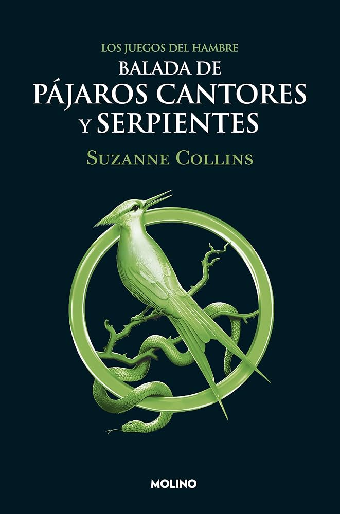

Balada de pájaros cantores y serpientes
Suzanne Collins
19,95 €
Esta novela de Suzanne Collins es la precuela de la saga Los juegos del hambre. La historia transcurre muchos años antes de los hechos de Katniss Everdeen, durante la décima edición de los Juegos.
Su protagonista es un joven Coriolanus Snow, mentor de Lucy Gray Baird, la tributo del Distrito 12. Una historia sobre el poder, la ambición y las decisiones que cambian a una persona.
Datos del libro
- Autora: Suzanne Collins
- Género: distopía y ciencia ficción juvenil
- Precuela de: Los juegos del hambre
- Título original: The Ballad of Songbirds and Snakes